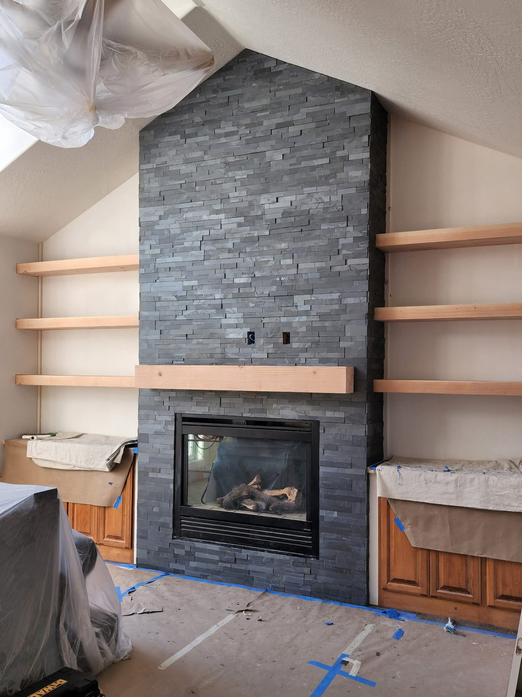
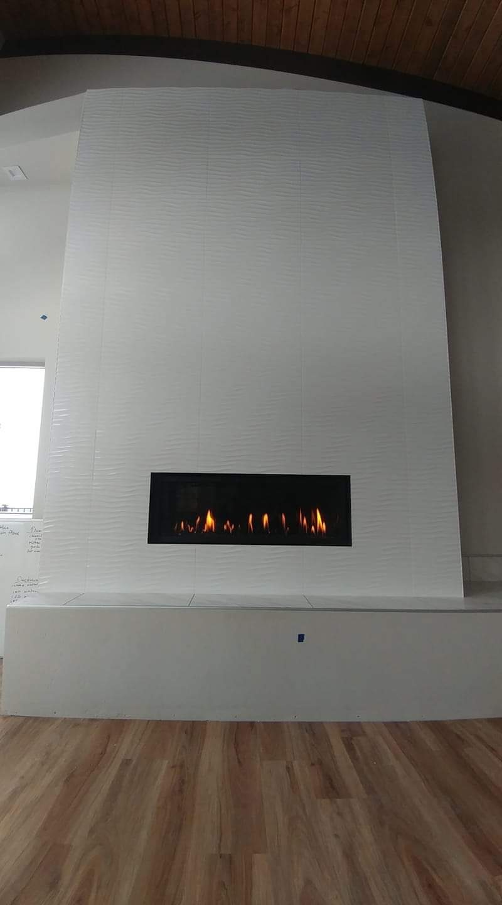

Recent Work
Tile Installation Projects
A look at recent tile installation work from DCB Construction in the Hayden region.




Tile floors, walls, showers, backsplashes, and fireplace surrounds — installed right the first time for Hayden homes.
Tile is the difference between a remodel that looks great for a year and one that looks great for 20. The substrate prep, waterproofing, and grout work are what determine whether tile lasts — and they're exactly the steps that get rushed by less-experienced installers. DCB Construction LLC has been installing tile in Hayden homes for over a decade — ceramic, porcelain, natural stone, mosaic, large-format — across floors, walls, showers, backsplashes, and fireplace surrounds.
We work with the material you want and the substrate you have. We don't shortcut the underlayment, we don't paint over uneven subfloors, and we don't grout with the wrong product for the application.
A look at recent tile installation work from DCB Construction in the Hayden region.


Tile in Hayden sees specific demands — winters track in moisture and salt that wears out poorly-installed entryway tile in a single season, and the temperature swing between heated indoors and outdoor cold makes substrate movement a real issue. We choose adhesives and grouts rated for the application and the climate, not whatever's on sale that week.
We've tiled across Hayden Lake, downtown Hayden, the Honeysuckle area, and the rural acreages north of town — across a mix of mid-century ranch homes near Hayden Lake, newer construction in the Honeysuckle area, and a growing number of custom builds north of town, each bringing its own substrate quirks. Older Hayden homes often have wood subfloors that need cement board or an uncoupling membrane before tile can go down; newer construction often has the prep done correctly but uses the wrong grout for wet areas.
Looking for other work in Hayden? See: kitchen remodeling in Hayden, bathroom remodeling in Hayden, walk-in showers in Hayden, or visit our Hayden area page.
Tile installation in Hayden typically runs $8 to $20 per square foot for labor, plus the cost of tile and materials. Standard 12x24 porcelain on a level subfloor lands in the $10 to $12 range; large-format tile, natural stone, and complex patterns push higher. A typical kitchen backsplash is $800 to $1,800 installed; a bathroom floor is $1,500 to $3,500. We quote with everything spelled out — labor, materials, prep, and any subfloor work — so there are no surprises.
For Hayden: porcelain is the best all-around choice — denser than ceramic, fully waterproof, durable enough for floors, and available in styles that mimic stone or wood without the maintenance. Ceramic is fine for walls and backsplashes but not ideal for floors in high-traffic areas. Natural stone (travertine, marble, slate) looks incredible but requires sealing every 1 to 2 years to handle moisture; it's a great choice for accent walls and shower surrounds where appearance matters most.
Tile installation itself doesn't usually require a permit — but the work it's part of (bathroom remodel, kitchen renovation, fireplace rebuild) often does. We handle any required permits with the Kootenai County Building Department (Hayden falls under both city and county jurisdictions depending on parcel) as part of the larger project.
Most Hayden tile projects take 3 to 7 days depending on size and complexity. A kitchen backsplash is typically 2 to 3 days (one to set, one to grout, one for cleanup and sealer). A bathroom floor is 3 to 5 days. A full shower surround can run 5 to 7 days because of the waterproofing cure time. We don't rush the grout cure — it's where most tile work fails 5 years later.